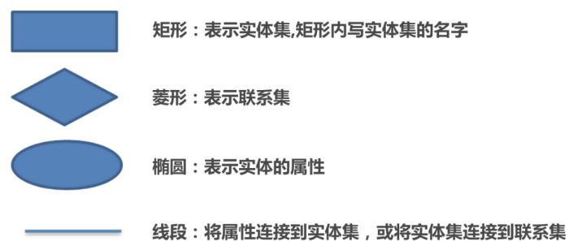
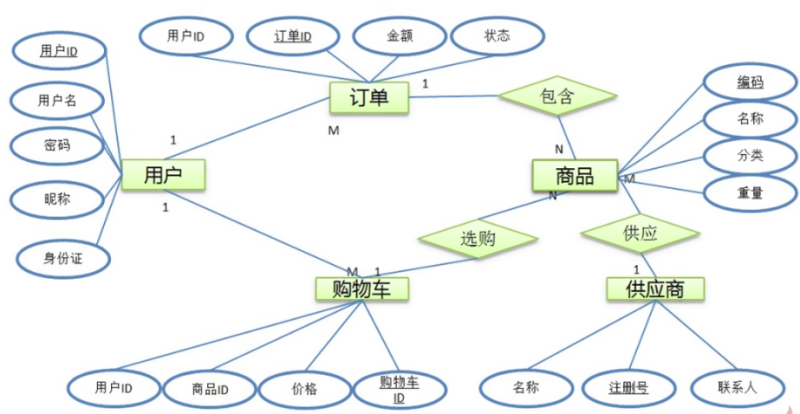
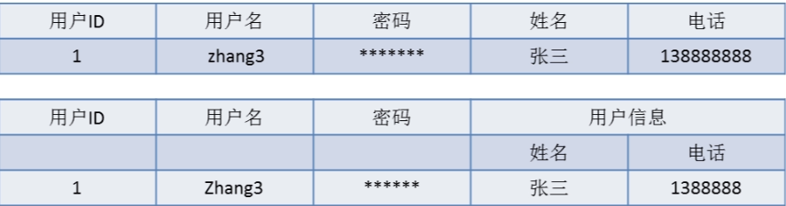
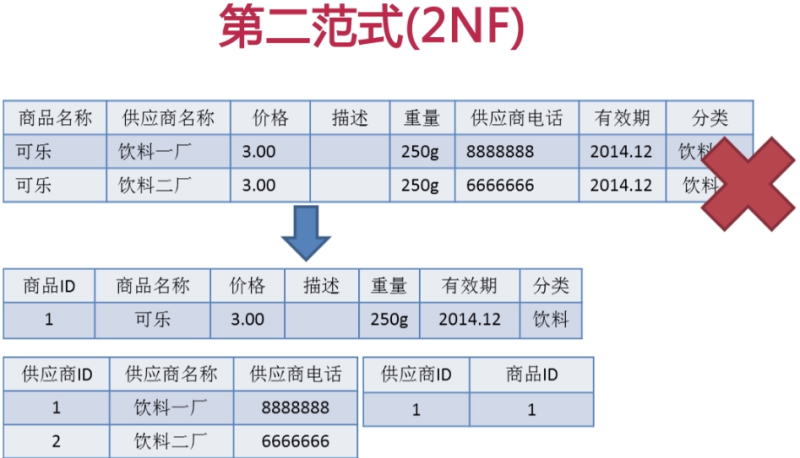
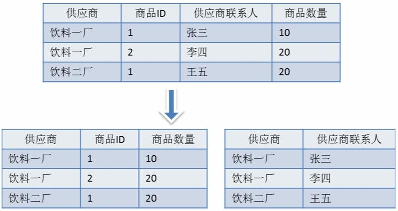

SQL
SQL(Structured Query Language, 结构化查询语言)可以分为DDL(data definition language,数据定义语言) TPL(事务处理语言) DML(data manipulation language, 数据操作语言)和DCL(data control language, 数据控制语言)。
其主要的语句有:
- DDL(data definition language,数据定义语言) 创建、删除和更改数据库对象
- 创建 删除 修改数据库
- creat database
- drop database
- alter database
- 创建 删除 修改数据表
- create table
- alter table
- drop table
- 创建 删除索引
- create index
- drop index
- 创建 删除 修改数据库
- DML(data manipulation language, 数据操作语言) 查询和更新指令都成了SQL的DML部分
- select 从表或试图中检索数据
- update 更改表中的数据
- delete 从表中删除数据行
- insert into 添加数据行到表
- DCL(data control language, 数据控制语言)
- 用于规定数据库用户的各种权限
- grant 将权限或角色授予用户或其他角色
- revoke 从用户或数据库角色回收权限
- 数据库事务控制
- commit 把当前事务所有的更改写入磁盘
- rollback 作废上次提交依赖的所有的更改
- 用于规定数据库用户的各种权限
数据库设计
数据库设计可以分为需求分析、逻辑分析、物理设计和维护优化四个阶段。
数据库的基本名词：
- 关系：一个关系对应通常所说的一张表
- 元组：表中的一行即为一个元组
- 属性：表中的一列即为一个属性；每一个属性都有一个名称，称为属性名。
- 候选码：表中的某个属性组，它可以唯一确定一个元组。
- 主码：一个关系有多个候选码，确定其中一个为主码
- 域：属性的取值范围
- 分量：元组中的一个属性值。
ER图
ER图中各符号的含义：

在这里以订单、用户、商品、供应商以及购物车的关系构建ER图

矩形框表示实体, 即图中的订单、用户、商品、供应商以及购物车。 椭圆表示视图的属性， 如用户的用户ID、用户名、密码、昵称和身份证。椭圆中的文本表示属性的名称，文本带下划线表示为主键。 线段将属性与实体集相互连接，表示属性是实体的。将实体间相互连接，表示实体间的对应关系。 线段的两端标示1或M，表示是一对一、一对多或者多对多的关系。
数据操作异常与数据冗余
数据操作异常是判断数据库设计是否合理的依据。
- 插入异常： 如果某实体随着另一个实体的存在而存在， 即缺少某个实体时无法表示这个实体，那么这个表就存在插入异常。
- 更新异常： 如果更改表所对应的某个实体实例的单独属性时，需要将多行更新，那么就说这个表存在更新异常。
- 删除异常： 如果删除表的某一行来反应某实体实例。失效时导致另一个不同实体实例信息丢失，那么这个表存在删除异常。
数据冗余： 是指相同的数据在多个地方存在， 或者说表中的某个列可以有其他列计算得到，这样就说表中存在着数据冗余。
三范式
第一范式(1NF)
字段具有原子性,不可再分。所有关系型数据库系统都满足第一范式。 数据库表中的字段都是单一属性的，不可再分。例如，姓名字段，其中的姓和名必须作为一个整体，无法区分哪部分是姓，哪部分是名，如果要区分出姓和名，必须设计成两个独立的字段。
这个单一属性是由基本的数据类型所构成的， 如整数，浮点数，字符串等； 换句话说： 第一范式要求数据库中的表都是二维表
如下表中

第二个表格中， 用户信息列又包含姓名 电话两个列。 不符合第一范式的要求
第二范式(2NF)
满足第二范式（2NF）必须先满足第一范式（1NF）。 要求数据库表中的每个实例或行必须可以被惟一地区分。通常需要为表加上一个列，以存储各个实例的惟一标识。这个惟一属性列被称为主关键字或主键。 第二范式（2NF）要求实体的属性完全依赖于主关键字。所谓完全依赖是指不能存在仅依赖主关键字一部分的属性，如果存在，那么这个属性和主关键字的这一部分应该分离出来形成一个新的实体，新实体与原实体之间是一对多的关系。为实现区分通常需要为表加上一个列，以存储各个实例的惟一标识。简而言之，第二范式就是非主属性非部分依赖于主关键字。

由于供应商和商品之间是多对多的关系
所以只有使用商品名称和供应商名称才可以唯一表示出一件商品。
也就是商品名称和供应商名称是一组组合关键字。
上表的依赖关系为:
- (商品名称)->(价格、描述、重量、商品有效期)
- (供应商名称)->(供应商电话)
存在的问题：
- 插入异常
- 删除异常
- 更新异常
- 数据冗余
第三范式
必须先满足第二范式（2NF）。简而言之，第三范式（3NF）要求一个数据库表中不包含已在其它表中已包含的非主关键字信息。 所以第三范式具有如下特征：
1. 每一列只有一个值
2. 每一行都能区分。
3. 每一个表都不包含其他表已经包含的非主关键字信息。
例如，帖子表中只能出现发帖人的id，而不能出现发帖人的id，还同时出现发帖人姓名，否则，只要出现同一发帖人id的所有记录，它们中的姓名部分都必须严格保持一致，这就是数据冗余。
如果数据表中不存在非关键字段对任一候选字段的传递函数依赖则符合第三范式。
BC范式(Boyce.Codd范式)
在第三范式的基础上，数据库表中如果不存在任何字段对任一候选关键字段的传递函数依赖则符合BC范式。 也就是说如果是符合关键字，则符合关键字之间也不能存在函数依赖关系。

上表中存在的下列关系不符合BCNF:
- (供应商)->(供应商联系人)
- (供应商联系人)->(供应商)
- 并且存在数据存在异常及数据冗余
数据库锁
锁的类型有三种：
- 共享（S)锁：多个事务可封锁一个共享页；任何事务都不能修改该页； 通常是该页被读取完毕，S锁立即被释放。
- 排它（X)锁：仅允许一个事务封锁此页；其他任何事务必须等到X锁被释放才能对该页进行访问；X锁一直到事务结束才能被释放。
- 更新（U)锁：用来预定要对此页施加X锁，它允许其他事务读，但不允许再施加U锁或X锁；当被读取的页将要被更新时，则升级为X锁；U锁一直到事务结束时才能被释放。
TODOs
- 事务 各个层次的操作
- 键 唯一键 主键 外键
- MySQL集群
- 事务隔离级别